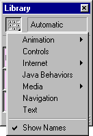
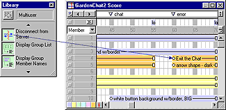
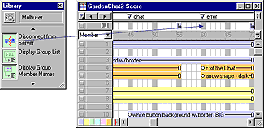
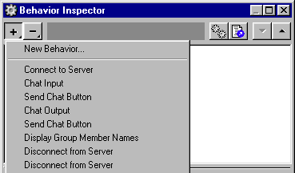

Using Director > Behaviors > Attaching behaviors
Using Director > Behaviors > Attaching behaviors |
Attaching behaviors
You use the Library palette to display behaviors included in Director.
Director allows you to attach the same behavior to several sprites or several frames at the same time. You can attach as many behaviors as you want to a sprite, but you can attach only one behavior to a frame. If you attach a behavior to a frame that already has a behavior, the new behavior replaces the old one. Behaviors attached to frames are best suited to actions that affect the entire movie. For example, you might attach Loop Until Media in Frame is Available to make the movie wait while the media for a particular frame downloads.
When you attach a behavior, and the Parameters dialog box appears, note that the parameters you specify apply to the behavior only as it is attached to the current sprite or frame. These settings do not affect the way the behavior works when attached elsewhere. Use the Behavior Inspector to change parameters for behaviors attached to sprites or frames.
Once you attach a behavior to a sprite or frame, Director copies the behavior from the Behavior Library to the currently selected cast in the movie. This means you don't have to include the Behavior Library when you distribute the movie.
To attach a behavior to a single sprite or frame using the Library palette:
1 |
Choose Window > Library Palette. |
2 |
Choose a library from the Library pop-up menu in the upper left corner of the palette.
 |
3 |
To view a brief description of included behaviors, move the pointer over a behavior icon. |
If the behavior includes a longer description, you can view it in the Behavior Inspector. See Getting information about behaviors. The behaviors included with Director come with descriptions. Behaviors from other sources may not. |
|
Choose Show Names from the Library pop-up menu to turn the display of behavior names off or on. |
|
4 |
To attach a behavior to a single sprite, do one of the following: |
Drag a behavior from the Library palette to a sprite on the Stage or in the Score.
 |
|
Drag a behavior from the Library palette to a frame in the behavior channel.
 |
|
5 |
Enter parameters for the behavior in the Parameters dialog box. |
Note: If you attach a behavior from a Director library of behaviors, the behavior is copied to an internal cast, to prevent you from accidentally changing the original behavior.
To attach the same behavior to several sprites at once using the Library palette:
Select the sprites on the Stage or in the Score and drag a behavior to any one of them.
To attach behaviors that are already attached to a sprite or frame:
1 |
Choose Window > Inspectors > Behavior to open the Behavior Inspector. |
2 |
Do one of the following: |
Select a sprite or several sprites. |
|
Select a frame or several frames. |
|
3 |
Choose a behavior from the Behaviors pop-up menu. |
Director attaches the behavior you choose to the sprite(s) or frame(s).
 |
|
Note: Some behaviors work only when applied to either a sprite or a frame; read the behavior descriptions to learn more.
To change parameters for a behavior attached to a sprite or frame:
1 |
Select the sprite or frame to which the behavior is attached. |
2 |
In the Behavior tab of the Property Inspector, use the pop-up menus or text fields to change any parameters. |
The Behavior tab includes the same fields for the behavior as those included in the Parameters dialog box. |
|